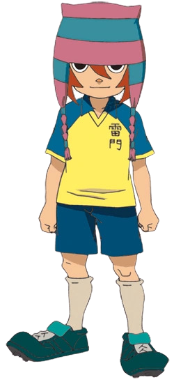

MAXWELL CARSON
{% for item in statistiche_3 %}
Squadra: {{ item[0] }}
Posizione: {{ item[1] }}
Elemento: {{ item[2] }}
Tiro: {{ item[3] }}
Fisico: {{ item[4] }}
Controllo: {{ item[5] }}
Difesa: {{ item[6] }}
Velocità: {{ item[7] }}
Stamina: {{ item[8] }}
Determinazione: {{ item[9] }}
Prima mossa: {{ item[10] }}
Seconda mossa: {{ item[11] }}
Terza mossa: {{ item[12] }}
Quarta mossa:{{ item[13] }}
{% endfor %}
BIOGRAFIA
Maxwell Carson (松野 空介 Matsuno Kūsuke) soprannominato Max (マック Makkusu) è uno dei centrocampisti della Raimon.
Debutta nell' episodio 1.
È stato uno dei centrocampisti della Dark Emperors.
Nella terza stagione fa il provino per entrare nella Inazuma ma alla fine non viene scelto.
Max è un ragazzo piuttosto basso di pelle chiara.
Ha lunghi e mossi capelli marroni, legati in una coda.
Ha degli occhi tondeggianti neri e un piccolo naso arancione.
Indossa sempre un cappello a strisce azzurre e rosa, con due finte trecce laterali.
Max è un ragazzo gentile e simpatico.
È molto attivo e sportivo, non si scoraggia mai ed è molto ottimista.
Riesce bene in tutti gli sport che pratica.